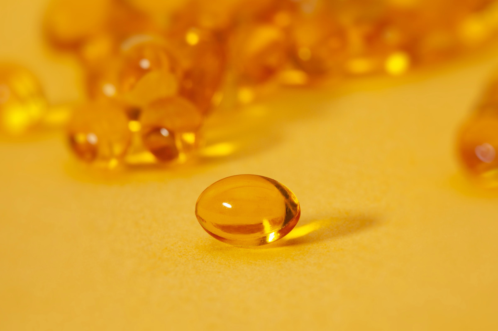
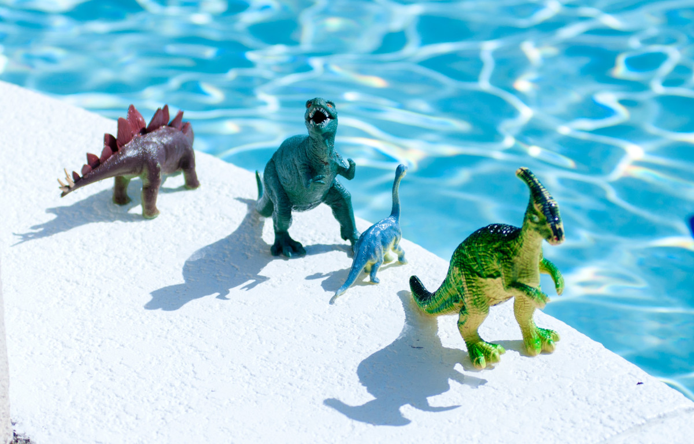

Dr. Hollick was paid by Quest Diagnostics, the largest company that BILLS lab testing for Vitamin D levels and he was also PAID by one of the companies that sell Vitamin D supplements to help them sell more products. Dr. Hollicks website is unsecured and I do not believe in giving away free advertising so you can search this information out for yourself.
Dr. Hollick used his MD PhD credentials in 2011 to convince the Endocrine Society to ADOPT a position that normal Vitamin D levels should be between 30-100 ng/ml for where there is NO EVIDENCE to support this range.
 Michele Blackwell on Unsplash
This new guideline automatically made about 60-80% of the US population Vitamin D “deficient”
and Dr. Hollick promoted widespread testing, (Quest making money), and widespread
supplementation, (Companies making money), while the SUN kept providing free sunshine every day.
(Mother nature making no money)
Dr. Hollicks fixation is so intense with “Vitamin D Deficiency” that it extends to the
dinosaurs. What if the real problem with that asteroid 65 million years ago wasn’t a lack of
food, but the weak bones that follow a lack of sunlight? “I sometimes wonder,” Dr. Holick wrote
in his book, “did the dinosaurs die of rickets and Osteomalacia?” WOW!!!!

Photo by Katie Smith on Unsplash
But remember to make money in this world people will buy products based upon advertising and not quality of the product. Apologies to all those people using pedometers to lose weight or the abdominizer that giggles your abdominal muscles while driving your car not headed to a park/gym or sitting at work so you don’t have to do any sit ups as part of a comprehensive diet/exercise program to get that six pack of abs.
 Photo by Sarah Brown on Unsplash
Photo by Sarah Brown on Unsplash
Dr. Hollick promoted the narrative that there was a Vitamin D deficiency “epidemic” (after
creating it by changing the normal values) and he promoted his 2010 Vitamin D book. If you want
to make Money in America do not start a free blog, but write and sell a book.
I wish the NBA would lower the basketball rim from 10 feet to 9 feet so all the amazing dunks I
do on my Nerf Rim in my back yard could be shown on television.
The industry and Dr. Hollick have cashed in. Vitamin D sales last year were around $1.6 billion
dollars and Vitamin D tests for Medicare patients alone were $465 million dollars. The total
cost of tests for Vitamin D for all populations was $1.1 billion dollars plus the cost of
unnecessary doctors’ visits trying to treat “feedback inhibition” of PTH, Alpha Hydroxylase and
Vitamin D-25 is unknown. Yet pre-diabetes and type 2 diabetes are of true “EPIDEMIC PROPORTIONS”
in America.
I hope that a basic understanding of Physiology and unbiased research will not become the next
extinct dinosaurs of American Medicine. I rule judgement for research and physiology.